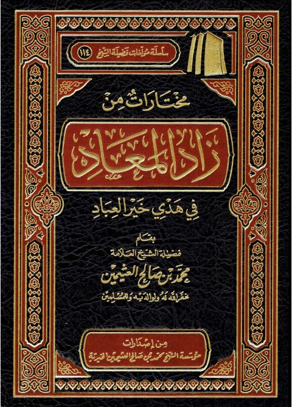

Downloads need an internet connection.
مختارات من زاد المعاد في هدي خير العباد
Authors: محمد بن صالح العثيمين
Publishers: مؤسسة الشيخ محمد بن صالح العثيمين الخيرية
**▫️ العنوان: مختارات من زاد المعاد في هدي خير العباد** ▪️ المؤلف: #محمد_بن_صالح_العثيمين ▫️ الناشر: #مؤسسة_الشيخ_محمد_بن_صالح_العثيمين_الخيرية ▪️ تاريخ النشر: 1434هـ 2013 م ▫️ بلد النشر: عنيزة، #السعودية ▪️ الطبعة: 1 ▫️ عدد الأجزاء: 1 ▪️ الصفحات: 323 ▫️ نوع الوعاء: #كتاب ▪️ التصنيف الرئيسي: #الفقه_وأصوله ▫️ التصنيف الفرعي: #فقه_عام ۪